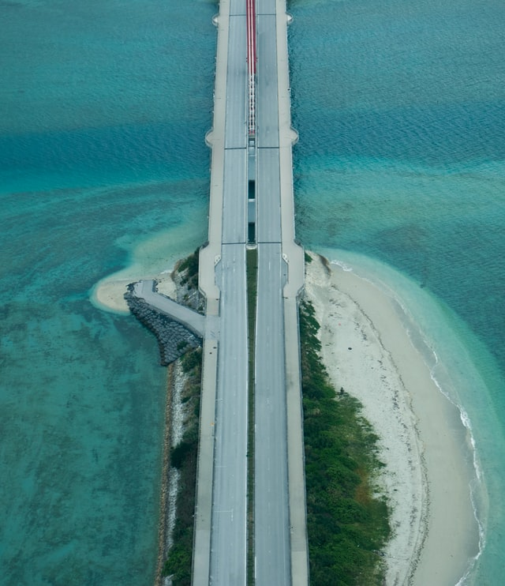

儀部龍星のポートフォリオです！
閲覧いただきありがとうございます！
主な内容は、自己紹介、実績、自己PR文です。
自己紹介
沖縄県出身の、名桜大学国際学群情報システムズ専攻(次)3年生の儀部龍星です。
私は、小学校の頃からソフトテニスや三線とともに暮らしてきました。
ソフトテニスでは、高校3年生の頃に副キャプテンになり、沖縄県優勝をすることができました。
三線は、小学3年生の頃に始めいろいろなイベントやコンクールに参加し、沖縄の文化とともに生きてきました。
今後も、自分なりの形で付き合っていこうと考えています。
また、私の夢はフリーランスのエンジニアになることで、今はプログラミング言語やマーケティングについて学んでいこうと考えています。
実績
- 日商簿記2級
- ITパスポート
- 沖縄県ソフトテニス団体優勝
- 沖縄県ソフトテニス個人戦ダブルス準優勝
- 沖縄県シングルスベスト4
自己PR
私の長所は、決めたことは結果が出るまでやり続けることと、周りの人に恵まれていることです。
高校時代には、ソフトテニス部に所属しており、沖縄県で優勝し、全国大会まで出場することごできました。
大学に入ってからは、日商簿記二級の取得に向けて努力し、取得することができました。
また、それらの目標が達成できたのは私が周りの人に恵まれていることが大きいと思います。
高校の部活動は、周りの人と切磋琢磨しなければ結果を出すことができなかったと思います。
また、簿記の取得にしてもその他の目的の達成にも私の周りの存在がとてもデカかったと感じています。
以上が、私の自己PRです。